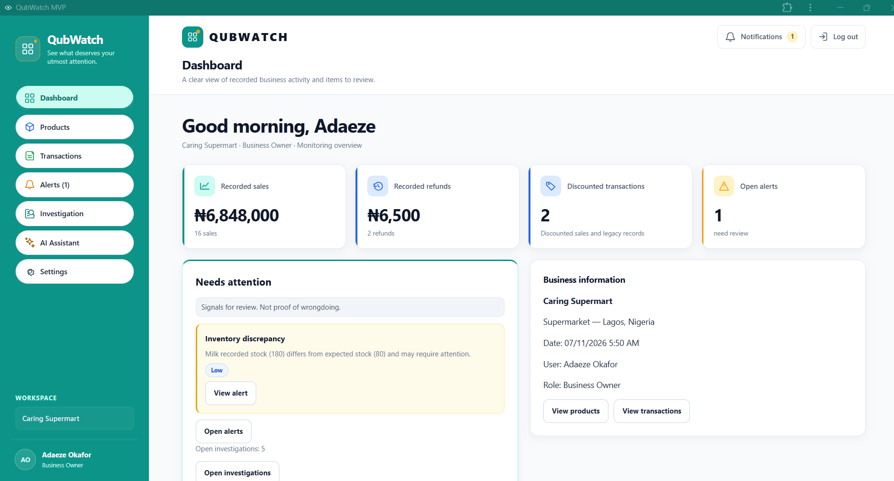

Project screenshot

The problem being explored
Business owners and managers cannot always be present to review activity across every location. Sales, refunds, discounts and stock movements can be difficult to monitor when information is spread across manual updates or separate reports.
QubWatch explores a practical way to bring selected activity into one place, based on monitoring rules defined for the business.
My contribution
- Developing and refining the product concept and target-user problem.
- Defining user roles, workflows and example monitoring rules.
- Building and refining interface components and application features.
- Testing workflows, troubleshooting issues and making iterative improvements.
- Preparing product documentation and deployment-related project materials.
Product principles
- Alerts are signals for authorised users to review, not proof of wrongdoing.
- The product supports human attention and investigation; it does not make accusations or autonomous decisions.
- The current focus is inventory-based, high-transaction businesses.
- Demonstrations use sample data.
Current stage and learning
The MVP has been built and is undergoing further refinement. This is a cohort-built project, and this case study describes my practical contribution rather than claiming that every part was completed independently.
The work is helping me develop experience in translating a business problem into product requirements, thinking through user roles and workflows, and improving an application through testing.